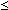

Our simulations of winning times in the 1500 metres race in the Olympic games were based on a model with a large underlying population of 'potential' competitors whose capabilities (the fastest time that they could run 1500 metres with training) were normally distributed. How much do our conclusions depend on the shape of this population distribution? Since we have collected no information about its shape, the upper tail could be far from normal.
We will show that the results of the simulation are only affected by the shape of the lowest part of the left tail of the population distribution — the rest of the distribution could be any shape without affecting our simulation results.
The diagram below shows a normal model for a population of capabilities (µ = 458 sec and σ = 50 sec). The cumulative distribution function, F(x) = P(X  x), is also drawn in black.
The diagram also shows how ten pseudo-random values from this distribution (horizontal dot plot) are generated from ten rectangularly distributed values (vertical dot plot). The winning speed is highlighted in red.
Click Take sample a few times and verify that the winning time is usually in the lower half of the population distribution (under 458 sec).
Use the slider to modify the shape of the upper tail of the population distribution. Observe that race times under 458 (and therefore the winning time) are unaffected.
Use the pop-up menu to increase the sample size and take a few more samples. When the sample size increases, the minimum tends to be further into the left tail of the distribution. As a result, the distribution of the minimum of large samples is only affected by the shape of the extreme left tail of the population distribution.
Since the sample sizes in our simulation are large, our conclusions would not be affected if we made different assumptions about the shape of the main part of the population distribution.
(The simulation results are however dependent on the shape of the extreme left tail of the population distribution. Our assumption of normality does constrain the shape of the left tail so our results are not completely independent of the shape of the population distribution.)